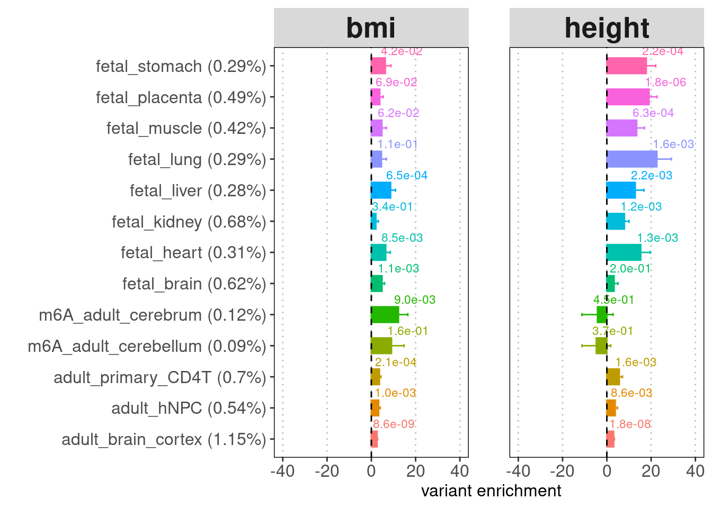
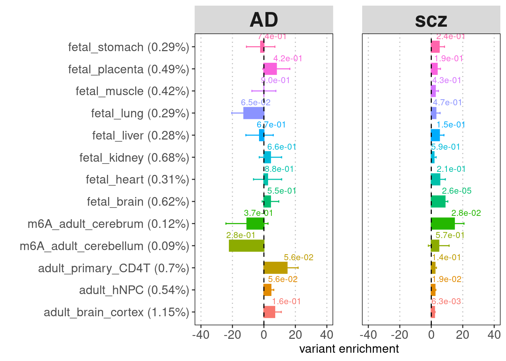
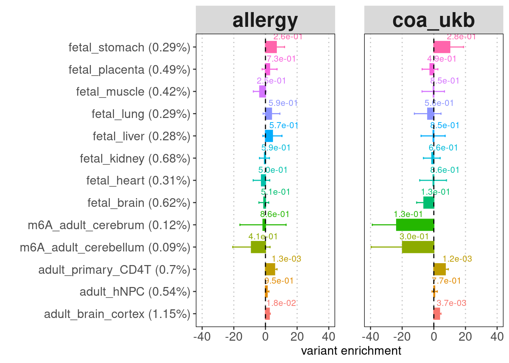

Last updated: 2024-10-15
Checks: 7 0
Knit directory: m6A_in_disease_genetics/
This reproducible R Markdown analysis was created with workflowr (version 1.7.1). The Checks tab describes the reproducibility checks that were applied when the results were created. The Past versions tab lists the development history.
Great! Since the R Markdown file has been committed to the Git repository, you know the exact version of the code that produced these results.
Great job! The global environment was empty. Objects defined in the global environment can affect the analysis in your R Markdown file in unknown ways. For reproduciblity it’s best to always run the code in an empty environment.
The command set.seed(20230331) was run prior to running
the code in the R Markdown file. Setting a seed ensures that any results
that rely on randomness, e.g. subsampling or permutations, are
reproducible.
Great job! Recording the operating system, R version, and package versions is critical for reproducibility.
Nice! There were no cached chunks for this analysis, so you can be confident that you successfully produced the results during this run.
Great job! Using relative paths to the files within your workflowr project makes it easier to run your code on other machines.
Great! You are using Git for version control. Tracking code development and connecting the code version to the results is critical for reproducibility.
The results in this page were generated with repository version 31b6e55. See the Past versions tab to see a history of the changes made to the R Markdown and HTML files.
Note that you need to be careful to ensure that all relevant files for
the analysis have been committed to Git prior to generating the results
(you can use wflow_publish or
wflow_git_commit). workflowr only checks the R Markdown
file, but you know if there are other scripts or data files that it
depends on. Below is the status of the Git repository when the results
were generated:
Ignored files:
Ignored: analysis/m6A_switch_to_disease_h2g.nb.html
Ignored: analysis/tutorial_for_seurat_object.nb.html
Ignored: data/plots/
Untracked files:
Untracked: .ipynb_checkpoints/
Untracked: HMGCR_locus_gene_tracks.pdf
Untracked: Rplots.pdf
Untracked: analysis/.ipynb_checkpoints/
Untracked: analysis/IBD_E_S_m6A.Rmd
Untracked: analysis/IBD_E_S_m6A_output.Rmd
Untracked: analysis/LDL_E_S_m6A.Rmd
Untracked: analysis/LDL_m6A_output.Rmd
Untracked: analysis/RA_m6A_output.Rmd
Untracked: analysis/Untitled.ipynb
Untracked: analysis/WhiteBlood_WholeBlood_E_M.Rmd
Untracked: analysis/collaborators/
Untracked: analysis/identify_m6A_mechanisms_with_finemapping.Rmd
Untracked: analysis/lymph_m6A_output.Rmd
Untracked: analysis/m6aQTL_ctwas_across_traits.Rmd
Untracked: analysis/pre_weights_m6AQTL.txt
Untracked: analysis/rbc_E_S_m6A_output.Rmd
Untracked: analysis/rbc_m6A_output.Rmd
Untracked: analysis/summarize_ctwas_m6A_results.Rmd
Untracked: analysis/tutorial_for_seurat_object.Rmd
Untracked: analysis/wbc_E_S_m6A_output.Rmd
Untracked: code/.ipynb_checkpoints/
Untracked: code/all_m6a_sites_with_paired_cisNATs_summary.csv
Untracked: code/annotating_fine-mapped_m6A_QTLs.Rmd
Untracked: code/check_double_strand.ipynb
Untracked: code/check_double_strand_v2.ipynb
Untracked: code/convert_to_predictDB.R
Untracked: code/ctwas/
Untracked: code/figure/
Untracked: code/learn_gviz.Rmd
Untracked: code/learn_gviz.html
Untracked: code/learn_gviz.nb.html
Untracked: code/m6AQTL_finemapping.Rmd
Untracked: code/plot_genomic_tracks_gviz.ipynb
Untracked: code/summary_TWAS_coloc_m6A_2023.Rmd
Untracked: code/test_ctwas_plots.pdf
Untracked: code/test_gviz.ipynb
Untracked: code/twas_genes_PP4_0.3_immune_traits_trackplots.pdf
Untracked: data/.ipynb_checkpoints/
Untracked: data/ADCY7_gwas_input.tsv
Untracked: data/ADCY7_qtl_input.tsv
Untracked: data/Allergy_full_coloc.txt
Untracked: data/Asthma_full_coloc.txt
Untracked: data/CAD_full_coloc.txt
Untracked: data/Eosinophil_count_full_coloc.txt
Untracked: data/GSE125377_jointPeakReadCount.txt
Untracked: data/G_list.Rd
Untracked: data/HMGCR_ctwas_dat.Rd
Untracked: data/IBD_full_coloc.txt
Untracked: data/JointPeaks.bed
Untracked: data/Li2022_dsRNAs.xlsx
Untracked: data/Lupus_full_coloc.txt
Untracked: data/RA_full_coloc.txt
Untracked: data/TABLE1_hg19.txt
Untracked: data/TABLE1_hg19.txt.zip
Untracked: data/__MACOSX/
Untracked: data/coloc_blood_traits.csv
Untracked: data/crohns_disease_full_coloc.txt
Untracked: data/ctwas_m6a_joint_top_PIP.txt
Untracked: data/edit_sites_and_GE_neg_correlated.txt
Untracked: data/edit_sites_and_GE_pos_correlated.txt
Untracked: data/features
Untracked: data/human_EERs.csv
Untracked: data/human_EERs.txt
Untracked: data/lymph_full_coloc.txt
Untracked: data/m6A=sites=cell=human=hg38=A549.txt.gz
Untracked: data/m6A=sites=cell=human=hg38=Jurkat.txt.gz
Untracked: data/m6A=sites=cell=human=hg38=MONO-MAC-6.txt.gz
Untracked: data/m6A=sites=cell=human=hg38=NOMO-1.txt.gz
Untracked: data/m6A=sites=cell=human=hg38=brain_cortex.txt.gz
Untracked: data/m6A=sites=cell=human=hg38=endoderm_cells.txt.gz
Untracked: data/m6A=sites=cell=human=hg38=fibroblasts.txt.gz
Untracked: data/m6A=sites=cell=human=hg38=hNPC.txt.gz
Untracked: data/m6A=sites=cell=human=hg38=lymphoblastoid_cell_line.txt.gz
Untracked: data/m6A=sites=cell=human=hg38=primary_CD4+_T.txt.gz
Untracked: data/m6A_TWAS_results.csv
Untracked: data/m6a_TWAS_genes.txt
Untracked: data/m6a_joint_calling_peaks.csv
Untracked: data/nasser_2021_ABC_IBD_genes.txt
Untracked: data/nat_sense_pairs.csv
Untracked: data/plt_full_coloc.txt
Untracked: data/rbc_full_coloc.txt
Untracked: data/rdw_full_coloc.txt
Untracked: data/reported_AS_targets_S1.txt
Untracked: data/reported_AS_wanowska.txt
Untracked: data/sig_coloc_results/
Untracked: data/test_locuscomparer.pdf
Untracked: data/ulcerative_colitis_full_coloc.txt
Untracked: data/wbc_full_coloc.txt
Untracked: data/zhao_silver_genes.csv
Untracked: output/.ipynb_checkpoints/
Untracked: output/HMGCR_gene_track_plot.pdf
Untracked: output/HMGCR_locus_plot.pdf
Untracked: output/IBD_DHX38_plot.pdf
Untracked: output/IBD_DHX38_plot_genetrack.pdf
Untracked: output/IBD_IP6K2_plot.pdf
Untracked: output/LDL_PMPCA_plot.pdf
Untracked: output/LDL_TMEM199_plot.pdf
Untracked: output/all_m6a_sites_with_cisNATs.csv
Untracked: output/all_m6a_sites_with_paired_cisNATs_summary.csv
Untracked: output/all_m6a_sites_with_paired_cisNATs_summary_PP40.3.csv
Untracked: output/all_m6a_sites_with_paired_cisNATs_summary_PP40.5.csv
Untracked: output/all_m6a_sites_with_paired_cis_NATs.csv
Untracked: output/asthma_GPR183_plot.pdf
Untracked: output/asthma_GPR183_plot2.pdf
Untracked: output/asthma_GPR183_plot_genetrack.pdf
Untracked: output/asthma_GPR183_plot_genetrack2.pdf
Untracked: output/asthma_GPR183_plot_nolegend.pdf
Untracked: output/asthma_GPR183_plot_nolegend_genetrack.pdf
Untracked: output/asthma_MIR210HG_plot_nolegend.pdf
Untracked: output/asthma_SLC25A11_plot_genetrack.pdf
Untracked: output/asthma_ZMAT2_plot.pdf
Untracked: output/asthma_ZMAT2_plot2.pdf
Untracked: output/asthma_ZMAT2_plot_genetrack.pdf
Untracked: output/asthma_ZMAT2_plot_genetrack2.pdf
Untracked: output/ctwas_locus_plot_output_data.Rd
Untracked: output/ctwas_m6a_joint_m6a_PIP_0.8.csv
Untracked: output/ctwas_m6a_joint_m6a_PIP_0.8.txt
Untracked: output/ctwas_m6a_joint_pip_above_0.6.RData
Untracked: output/ctwas_m6a_sites_in_RELIC_database.txt
Untracked: output/eosinoph_MEPCE_plot.pdf
Untracked: output/eosinoph_PTK2B_plot.pdf
Untracked: output/eosinoph_PTK2B_plot_genetrack.pdf
Untracked: output/eosinoph_SH2D3C_plot.pdf
Untracked: output/eosinoph_SLC43A3_plot.pdf
Untracked: output/eosinoph_ZER1_plot.pdf
Untracked: output/eosinoph_ZER1_plot_genetrack.pdf
Untracked: output/fine_mapped_m6AQTLs_TWAS_genes_highPP4.rds
Untracked: output/gene_summary.csv
Untracked: output/immune_related_m6A_targets.csv
Untracked: output/lupus_MIR210HG_IRF7_plot.pdf
Untracked: output/lupus_MIR210HG_IRF7_plot_genetrack.pdf
Untracked: output/lupus_MIR210HG_plot.pdf
Untracked: output/lupus_MIR210HG_plot_genetrack.pdf
Untracked: output/lupus_MIR210HG_plot_nolegend.pdf
Untracked: output/lupus_MIR210HG_plot_nolegend_genetrack.pdf
Untracked: output/lymph_ADCY7_BRD7_plot.pdf
Untracked: output/lymph_ADCY7_BRD7_plot_genetrack.pdf
Untracked: output/lymph_ADCY7_NOD2_plot.pdf
Untracked: output/lymph_ADCY7_NOD2_plot_genetrack.pdf
Untracked: output/lymph_ADCY7_plot.pdf
Untracked: output/lymph_BAZ1B_plot.pdf
Untracked: output/lymph_DDX55_plot.pdf
Untracked: output/lymph_DDX55_plot_genetrack.pdf
Untracked: output/lymph_EPC1_plot.pdf
Untracked: output/lymph_LAMTOR4_plot.pdf
Untracked: output/lymph_MDM2_plot.pdf
Untracked: output/lymph_RANGAP1_plot.pdf
Untracked: output/lymph_TAP2_plot.pdf
Untracked: output/lymph_THEMIS2_plot.pdf
Untracked: output/lymph_ZKSCAN5_plot.pdf
Untracked: output/lymph_ZSCAN25_plot.pdf
Untracked: output/m6aQTL_dsRNAs_PPP2R3C_PRORP.pdf
Untracked: output/m6a_QTL_genes.csv
Untracked: output/m6a_genes_PIP_0.6_blood_immune.csv
Untracked: output/m6a_genes_PIP_0.6_blood_immune.txt
Untracked: output/m6a_peaks_nearby_dsRNAs.csv
Untracked: output/m6a_sites_near_all_dsRNAs_twas.csv
Untracked: output/m6a_sites_near_dsRNAs_coloc.csv
Untracked: output/m6a_sites_near_dsRNAs_twas.csv
Untracked: output/m6a_sites_near_dsRNAs_twas_summary.csv
Untracked: output/m6a_sites_overlapping_NAT_twas.csv
Untracked: output/m6a_sites_overlapping_dsRNAs_coloc.csv
Untracked: output/m6a_sites_overlapping_dsRNAs_twas.csv
Untracked: output/m6a_sites_overlapping_dsRegions.csv
Untracked: output/m6a_sites_overlapping_dsRegions_coloc.csv
Untracked: output/matched_m6a_sites_from_RELIC.RDS
Untracked: output/negatively_correlated_genes.txt
Untracked: output/percent_PVE_by_traits.txt
Untracked: output/percent_PVE_by_traits_output.csv
Untracked: output/platelet_AKAP8_plot.pdf
Untracked: output/platelet_C17orf62_plot.pdf
Untracked: output/platelet_GSDMD_plot.pdf
Untracked: output/platelet_PHF11_plot.pdf
Untracked: output/platelet_SLC25A11_plot.pdf
Untracked: output/platelet_TAOK1_plot.pdf
Untracked: output/platelet_THEMIS2_plot.pdf
Untracked: output/platelet_THEMIS2_plot_genetrack.pdf
Untracked: output/platelet_TRAF2_plot.pdf
Untracked: output/platelet_UBE2G2_plot.pdf
Untracked: output/platelet_ZSCAN25_plot.pdf
Untracked: output/postively_correlated_genes.txt
Untracked: output/rs1806261_RABEP1-NUP88_focused_locusview.pdf
Untracked: output/rs1806261_RABEP1-NUP88_locusview.pdf
Untracked: output/rs3177647_MAPKAPK5-AS1-MAPKAPK5_locusview.pdf
Untracked: output/rs3204541_DDX55-EIF2B1_locusview.pdf
Untracked: output/rs7184802_ADCY7-BRD7_locusview.pdf
Untracked: output/rs7184802_ADCY7_locuscompare.pdf
Untracked: output/twas_genes_PP4_0.3_immune_traits_trackplots.pdf
Untracked: output/twas_genes_PP4_0.5_blood_traits_trackplots.pdf
Untracked: output/twas_m6a_sites_with_all_cisNATs.RDS
Untracked: output/twas_m6a_sites_with_cisNATs_range.RDS
Untracked: output/twas_m6a_sites_with_the_nearest_cisNAT.RDS
Untracked: output/wbc_RABEP1_NUP88_plot.pdf
Untracked: output/wbc_RABEP1_NUP88_plot_genetrack.pdf
Untracked: output/wbc_SLC9A3R1_plot.pdf
Untracked: test_ctwas_ggplot2_plots.pdf
Untracked: twas_genes_PP4_0.3_immune_traits_trackplots.pdf
Unstaged changes:
Modified: analysis/asthma_m6A_output_hg19.Rmd
Deleted: analysis/learn_ctwas.Rmd
Modified: analysis/lupus_m6A_output_hg19.Rmd
Modified: analysis/lymph_m6A_output_hg19.Rmd
Modified: analysis/m6A_switch_to_disease_h2g.Rmd
Modified: analysis/rbc_m6A_output_hg19.Rmd
Modified: analysis/wbc_m6A_output.Rmd
Modified: analysis/wbc_m6A_output_hg19.Rmd
Note that any generated files, e.g. HTML, png, CSS, etc., are not included in this status report because it is ok for generated content to have uncommitted changes.
These are the previous versions of the repository in which changes were
made to the R Markdown (analysis/AD_h2g_enrichment.Rmd) and
HTML (docs/AD_h2g_enrichment.html) files. If you’ve
configured a remote Git repository (see ?wflow_git_remote),
click on the hyperlinks in the table below to view the files as they
were in that past version.
| File | Version | Author | Date | Message |
|---|---|---|---|---|
| Rmd | 31b6e55 | Jing Gu | 2024-10-15 | make xlim ranges consistent |
| html | 87ec047 | Jing Gu | 2024-10-14 | Build site. |
| Rmd | af7cb31 | Jing Gu | 2024-10-14 | tested enrichment for adult brain dataset |
| html | 362f468 | Jing Gu | 2024-10-01 | Build site. |
| Rmd | 01e2114 | Jing Gu | 2024-10-01 | m6A enrichment for AD risk variants |
GWAS: Bellenguez et al.(2022) harmonized summary statistics.
LDSC parameters:
[1] "Fetal m6A peaks quantiles:" V1 X0. X25. X50. X75. X100.
1 Brain 55 201 328 607 8466
2 Heart 53 158 248 439 18918
3 Kidney 57 182 285 498 7736
4 Liver 52 161 250 425 7639
5 Lung 64 177 271 453 6965
6 Muscle 57 192 305 523 15627
7 Placenta 55 171 265 461 7060
8 Stomach 67 195 300 504.25 4869
9 merged 54 184 290 514 18918[1] "Adult m6A peaks quantiles:"[[1]]
| Version | Author | Date |
|---|---|---|
| 87ec047 | Jing Gu | 2024-10-14 |
[[2]]
| Version | Author | Date |
|---|---|---|
| 87ec047 | Jing Gu | 2024-10-14 |
[[3]]
| Version | Author | Date |
|---|---|---|
| 87ec047 | Jing Gu | 2024-10-14 |
[[4]]
| Version | Author | Date |
|---|---|---|
| 87ec047 | Jing Gu | 2024-10-14 |
R version 4.2.0 (2022-04-22)
Platform: x86_64-pc-linux-gnu (64-bit)
Running under: CentOS Linux 7 (Core)
Matrix products: default
BLAS/LAPACK: /software/openblas-0.3.13-el7-x86_64/lib/libopenblas_haswellp-r0.3.13.so
locale:
[1] LC_CTYPE=en_US.UTF-8 LC_NUMERIC=C LC_TIME=C
[4] LC_COLLATE=C LC_MONETARY=C LC_MESSAGES=C
[7] LC_PAPER=C LC_NAME=C LC_ADDRESS=C
[10] LC_TELEPHONE=C LC_MEASUREMENT=C LC_IDENTIFICATION=C
attached base packages:
[1] stats4 stats graphics grDevices utils datasets methods
[8] base
other attached packages:
[1] ggplot2_3.4.0 rtracklayer_1.58.0 GenomicRanges_1.50.2
[4] GenomeInfoDb_1.34.9 IRanges_2.32.0 S4Vectors_0.36.2
[7] BiocGenerics_0.44.0 dplyr_1.1.4 data.table_1.15.4
[10] workflowr_1.7.1
loaded via a namespace (and not attached):
[1] MatrixGenerics_1.10.0 Biobase_2.58.0
[3] httr_1.4.7 sass_0.4.9
[5] jsonlite_1.8.8 R.utils_2.12.3
[7] bslib_0.7.0 getPass_0.2-2
[9] highr_0.10 GenomeInfoDbData_1.2.9
[11] Rsamtools_2.14.0 yaml_2.3.8
[13] pillar_1.9.0 lattice_0.22-5
[15] glue_1.7.0 digest_0.6.35
[17] promises_1.3.0 XVector_0.38.0
[19] colorspace_2.1-0 R.oo_1.26.0
[21] htmltools_0.5.8.1 httpuv_1.6.14
[23] Matrix_1.6-5 XML_3.99-0.16.1
[25] pkgconfig_2.0.3 zlibbioc_1.44.0
[27] scales_1.3.0 processx_3.8.3
[29] whisker_0.4.1 later_1.3.2
[31] BiocParallel_1.32.6 git2r_0.33.0
[33] tibble_3.2.1 farver_2.1.1
[35] generics_0.1.3 DT_0.33
[37] cachem_1.0.8 withr_3.0.0
[39] SummarizedExperiment_1.28.0 cli_3.6.2
[41] magrittr_2.0.3 crayon_1.5.2
[43] evaluate_0.23 ps_1.7.6
[45] R.methodsS3_1.8.2 fs_1.6.4
[47] fansi_1.0.6 tools_4.2.0
[49] BiocIO_1.8.0 lifecycle_1.0.4
[51] matrixStats_1.2.0 stringr_1.5.1
[53] munsell_0.5.1 DelayedArray_0.24.0
[55] callr_3.7.3 Biostrings_2.66.0
[57] compiler_4.2.0 jquerylib_0.1.4
[59] rlang_1.1.3 grid_4.2.0
[61] RCurl_1.98-1.14 rstudioapi_0.15.0
[63] rjson_0.2.21 htmlwidgets_1.6.4
[65] crosstalk_1.2.1 labeling_0.4.3
[67] bitops_1.0-7 rmarkdown_2.26
[69] restfulr_0.0.15 gtable_0.3.5
[71] codetools_0.2-19 R6_2.5.1
[73] GenomicAlignments_1.34.1 knitr_1.46
[75] fastmap_1.1.1 utf8_1.2.4
[77] rprojroot_2.0.4 stringi_1.7.6
[79] parallel_4.2.0 Rcpp_1.0.12
[81] vctrs_0.6.5 tidyselect_1.2.1
[83] xfun_0.43